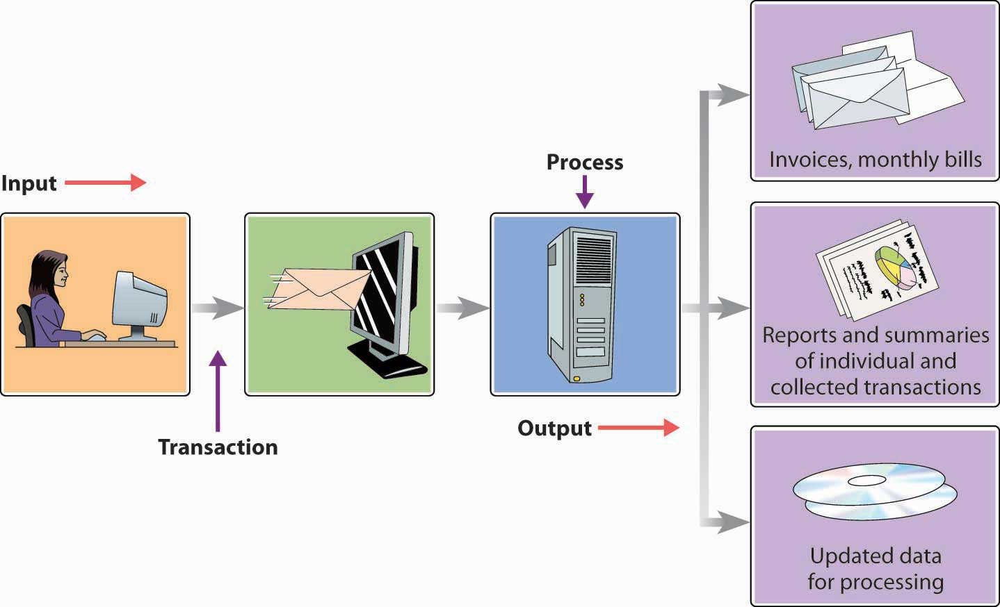
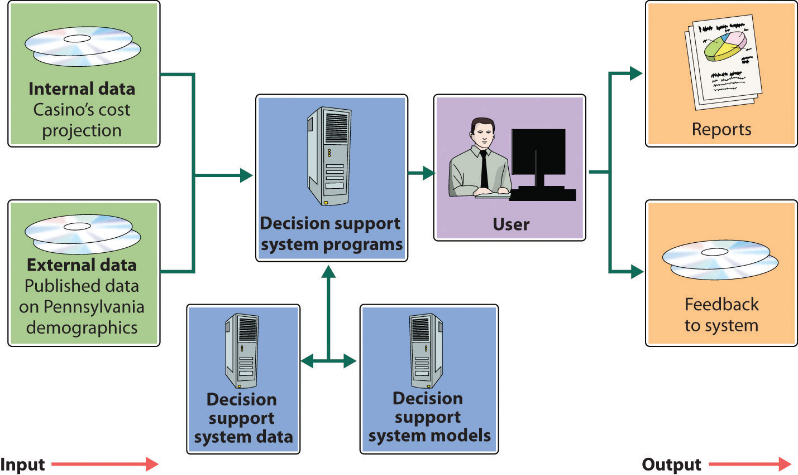

As we saw earlier, different managers, operational units, and functional areas have different information needs. That’s why organizations often tailor information systems to meet particular needs. Caesars’s IT group, for example, developed the Player Contact SystemDarrell Dunn, “Personal Touch For VIPs,” Information Week, November 4, 2003, http://www.informationweek.com/news/16000115 (accessed November 14, 2011); Darrell Dunn, “Client-Tracking System Helps Harrah’s Tailor Sales Efforts for Frequent Visitors,” Information Week, November 4, 2003, http://www.informationweek.com/story/showArticle.jhtml?articleID=16000115 (accessed June 2, 2006). to help its casino salespeople connect to top customers on a more personal basis. Working from a prioritized list of customer names displayed on a computer screen, the salesperson clicks on a name to view relevant information about the customer, such as background and preferred casino activities. There’s even a printed script that can be used to guide the conversation. Such a system isn’t very helpful, however, to middle or top-level managers, who need systems to help them carry out their oversight and planning responsibilities. To design marketing programs, for instance, marketing managers rely on summary information gleaned from a dedicated customer-relationship management system. Let’s look at some of the widely available information systems designed to support people at the operational and upper-management levels.
Operations support systemsInformation system used by lower-level managers to assist them in running day-to-day operations and making routine decisions. are generally used by managers at lower levels of the organization—those who run day-to-day business operations and make fairly routine decisions. They may be transaction processing systems, process control systems, or design and production systems.
Most of an organization’s daily activities are recorded and processed by its transaction processing systemInformation system used to record and process an organization’s daily activities or transactions., which receives input data and converts them into output—information—intended for various users. Input data are called transactionsFinancial and nonfinancial events that affect a business.—events that affect a business. A financial transaction is an economic event: it affects the firm’s assets, is reflected in its accounting statements, and is measured in monetary terms. Sales of goods to customers, purchases of inventory from suppliers, and salaries paid to employees are all financial transactions. Everything else is a nonfinancial transaction. The marketing department, for example, might add some demographic data to its customer database. The information would be processed by the firm’s transaction processing system, but it wouldn’t be a financial transaction.
Figure 15.5 "Transaction Processing System" illustrates a transaction processing system in which the transaction is a customer’s electronic payment of a bill. As you can see, transaction processing system output can consist not only of documents sent to outside parties (in this case, notification of payment received), but also of information circulated internally (in the form of reports), as well as of information entered into the database for updating.
Figure 15.5 Transaction Processing System
Process controlApplication of technology to monitor and control physical processes. refers to the application of technology to monitor and control physical processes. It’s useful, for example, in testing the temperature of food as it’s being prepared or gauging the moisture content of paper as it’s being manufactured. Typically, it depends on sensors to collect data periodically. The data are then analyzed by a computer programmed either to make adjustments or to signal an operator.
Caesars uses process-control technology to keep customers happy. At any given point, some slot machines are down, whether because a machine broke or ran out of money or somebody hit the jackpot. All these contingencies require immediate attention by a service attendant. In the past, service personnel strolled around looking for machines in need of fixing. Now, however, a downed slot machine sends out an “I need attention” signal, which is instantly picked up by a monitoring and paging system called MessengerPlus and sent to a service attendant.
As we saw in Chapter 11 "Operations Management in Manufacturing and Service Industries", modern companies rely heavily on technology to design and make products. Computer-aided design (CAD)System using computer technology to create models representing the design of a product. software, for instance, enables designers to test computer models digitally before moving new products into the prototype stage. Many companies link CAD systems to the manufacturing process through computer-aided manufacturing (CAM)System using computer technology to control production processes and equipment. systems that not only determine the steps needed to produce components but also instruct machines to do the necessary work. A CAD/CAM system can be expanded by means of computer-integrated manufacturing (CIM)System in which the capabilities of a CAD/CAM system are integrated with other computer-based functions., which integrates various operations (from design through manufacturing) with functional activities ranging from order taking to final shipment. The CIM system may also control industrial robots—computer-run machines that can perform repetitive or dangerous tasks. A CIM system is a common element in a flexible manufacturing systemSystem in which computer-controlled equipment is programmed to handle materials used in manufacturing., which makes it possible to change equipment setups by reprogramming computer-controlled machines that can be adapted to produce a variety of goods. Such flexibility is particularly valuable to makers of customized products.
Mid- and upper-level managers rely on a variety of information systems to support decision-making activities, including management information systems, decision support systems, executive support systems, and expert systems.
A management information systemSystem used to extract data from a database and compile reports that help managers make routine decisions. extracts data from a database to compile reports, such as sales analyses, inventory-level reports, and financial statements, to help managers make routine decisions. The type and form of the report depend on the information needs of a particular manager. At Caesars, for example, several reports are available each day to a games manager (who’s responsible for table-game operations and personnel): a customer-analysis report, a profitability report, and a labor-analysis report.Robert L. Shook, Jackpot! Harrah’s Winning Secrets for Customer Loyalty (Hoboken, NJ: John Wiley & Sons, 2003), 248–52.
A decision support systemInteractive system that extracts, integrates, and displays data from multiple sources to help managers make nonroutine decisions. is an interactive system that collects, displays, and integrates data from multiple sources to help managers make nonroutine decisions. For example, suppose that a gaming company is considering a new casino in Pennsylvania (which has recently legalized slot machines). To decide whether it would be a wise business move, management could use a decision support system like the one illustrated in Figure 15.6 "Decision Support System". The first step is to extract data from internal sources to decide whether the company has the financial strength to expand its operations. From external sources (such as industry data and Pennsylvania demographics), managers might find the data needed to determine whether there’s sufficient demand for a casino in the state. The decision support system will apply both types of data as variables in a quantitative model that managers can analyze and interpret. People must make the final decision, but in making sense of the relevant data, the decision support system makes the decision-making process easier—and more reliable.“Decision Support System,” Webopedia, http://www.webopedia.com/TERM/D/decision_support_system.html (accessed November 14, 2011).
Figure 15.6 Decision Support System
As we observed in Chapter 6 "Managing for Business Success", senior managers spend a good deal of their time planning and making major decisions. They set performance targets, determine whether they’re being met, and routinely scan the external environment for opportunities and threats. To accomplish these tasks, they need relevant, timely, easily understood information. Often, they can get it through an executive information systemSystem that provides senior managers with strategic information customized to meet their needs and presented in a convenient format., which provides ready access to strategic information that’s customized to their needs and presented in a convenient format. Using an executive information system, for example, a gaming-company executive might simply touch a screen to view key summary information that highlights in graphical form a critical area of corporate performance, such as revenue trends. After scanning this summary, our executive can “drill down” to retrieve more detailed information—for example, revenue trends by resort or revenue trends from various types of activities, such as gaming, hotel, retail, restaurant, or entertainment operations.
Artificial intelligenceScience of developing computer systems that can mimic human behavior. is the science of developing computer systems that can mimic human behavior. Ever since the term was coined in 1956, artificial intelligence has always seemed on the verge of being “the next big thing.” Unfortunately, optimistic predictions eventually collided with underwhelming results, and many experts began to doubt that it would ever have profitable applications.“Artificial Intelligence,” Webopedia, http://www.webopedia.com/TERM/A/artificial_intelligence.html (accessed November 14, 2011). In the last decade, however, some significant advances have been made in artificial intelligence—albeit in the area of game playing, where activities are generally governed by small sets of well-defined rules. But even the game-playing environment is sometimes complex enough to promote interesting developments. In 1997, for example, IBM’s Deep Blue—a specialized computer with an advanced chess-playing program—defeated the world’s highest-ranked player.“Artificial Intelligence,” Webopedia, http://www.webopedia.com/TERM/A/artificial_intelligence.html (accessed November 14, 2011).
More recently, several artificial intelligence applications have been successfully put to commercial use. Let’s take a brief look at two of these: expert systems and face-recognition technology.
Expert systemsProgram that mimics the judgment of experts. are programs that mimic the judgment of experts by following sets of rules that experts would follow. They’re useful in such diverse areas as medical diagnosis, portfolio management, and credit assessment. For example, you’ve called the customer-service department of your credit-card company because you want to increase your credit line. Don’t expect to talk to some financial expert who’s authorized to say yes or no. You’ll be talking to a service representative with no financial expertise whatsoever. He or she will, however, have access to an expert system, which will give you an answer in a few seconds. How does it work? The expert system will prompt the representative to ask you certain questions about your salary and living expenses. It will also check internal corporate data to analyze your purchases and payment behavior, and, based on the results, it will determine whether you get an increase and, if so, how much.
At Caesars, an expert system called the Revenue Management System helps to optimize the overall profitability of both hotel and casino operations. When a customer requests a room, the program accesses his or her profile in the database and consults certain “rules” for assessing the application.John Goff, “Head Games: Businesses Deploying Analytical Software to Get a Better Fix on Customer Behavior,” CFO Magazine for Senior Financial Executives 20:9, July 1, 2004, http://www.cfo.com/article.cfm/3014815 (accessed November 14, 2011). One rule, for example, might be, “If the customer has wagered more than $100,000 in the past year, add 10 points.” Eventually, the system decides whether your application will be accepted (and at what rate) by adding up points determined by the rules. While a tightwad may not get a room even when there are vacancies, a high roller may get a good rate on a luxury suite even if the hotel is nearly full.
Caesars uses another particularly interesting, and sophisticated, application of artificial intelligence. In the hotel-casino business, it’s crucial to identify and turn away undesirable visitors. One tool for this task is a digital camera-surveillance system that uses face-recognition technology. Using this technology, a program classifies a person’s face according to the presence/absence or extent of certain unique features, such as dimpled chins, receding jaws, overbites, and long or short noses. If there’s a match on, for example, fifteen features between a person being scanned and someone in the company database, a staff member decides whether the two people are the same. If a security manager then concludes that the face belongs to a skilled card-counter, the customer will be discouraged from playing blackjack; if it belongs to a known cheater, the individual will be escorted out of the casino. The system, however, does more than spot undesirables. It can also identify high rollers and send information about customers to managers on the floor. That’s why a Caesars manager can greet a preferred customer at the door with his favorite drink and a personalized greeting, such as “Hi, Bill! How’s Karen? Did you ever get that vintage Corvette? Here, have a gin rickey on the house.”See Daintry Duffy, “Technology’s Winning Hand,” CSO.online, October 1, 2003, http://www.csoonline.com/article/218574/catching-casino-cheats-technology-s-winning-hand (accessed November 14, 2011); Larry Barrett Gallagher and Sean Gallagher, “NORA and ANNA: Non-Obvious Relationship Awareness,” Baseline, April 4, 2004, http://www.baselinemag.com/c/a/Past-News/NORA-and-ANNA/ (accessed November 14, 2011).
An IS, or information system, can be divided into two categories:
Low-level managers—those who run day-to-day operations and make routine decisions—use operations support systems, which usually fall into three categories: transaction processing systems, process control systems, and computer-aided design software.
Mid- and upper-level managers may use one of four types of management support system to assist in decision-making activities: management information systems, decision support systems, executive information systems, and expert systems.
(AACSB) Analysis
For each of the following situations, select the appropriate management support system to aid the user: decision support system, executive support system, or expert system. In each case, describe the management support system that you recommend.